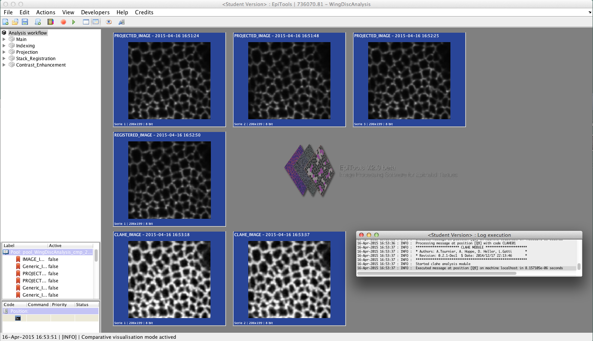

Welcome to Epitools
Here we present a new software toolkit to extract the membrane signal from epithelial tissues and analyze it with the aid of computer vision. The development of EpiTools was inspired by the challenges in analyzing time-lapses of growing Drosophila imaginal discs. The folded morphology, the very small apical cell surfaces and the long time series required a new automated cell recognition to accurately study growth dynamics.
EpiTools is composed of two main software projects to allow extended modularity
First an image processing application for MATLAB to extract the membrane outlines from the experimental data, featuring:
- Adaptive surface projection
- A Region growing segmentation algorithm with selective seeding
- Assisted Seed Correction for expert input
- An advanced GUI for a guided & reproducible analysis
Second a plugin collection for the bioimaging platform icy to interactively analyze the skeleton files, featuring:
- A network based java data-structure to semantically describe the tissue
- Automatic estraction & display of development features including:
- Divisions and Eliminations
- Junction rearragements (T1,T2)
- Cell Elongation Patterns
- Numerous Export options including Spreadsheets, GraphML and Vector Graphics
- Visualization and measurement of the estimated 3D gridfit surface
Our projects are pulished with Open source licenses. Follow us on BitBucket!
EpiTools was published in Developmental Cell (January 2016), freely available at http://dx.doi.org/10.1016/j.devcel.2015.12.012
News
2018-07-10 EpiTools Project moved to Github!
* new website address: epitools.github.io
* new repository: github.com/epitools
* download sections are now pointing to the release tab of each repository
* example datasets can be found in the epitools-samples repository
View older news here.
Downloads
| MATLAB Application | |
|---|---|
 |
|
| MATLAB source code |
For best compatability we reccomend using Matlab 2014a
visit our F.A.Q. section for more details on the topic.
| ICY Plugins | |
|---|---|
 |
|
| Plugins surce code |
EpiTools is licensed under GPLv3 you can find the details here.
Video Tutorials
Icy Plugin Tutorials (with audio!)
Make sure to download them to enjoy the HD quality (click on the dots in the lower right corner and click download).
Who built EpiTools?
Authors
- Davide Heller (1)
- Alexander Tournier (5)
- Andreas Hoppe (2)
- Simon Restrepo (1)
- Lorenzo Gatti (1,3,4)
- Nicolas Tapon (5)
- Konrad Basler (1)
- Yanlan Mao (6)
Affiliations
- Institute of Molecular Life Sciences, University of Zurich, Switzerland
- Digital Imaging Research Centre, Faculty of Science, Engineering and Computing, Kingston University, Kingston-upon-Thames, KT1 2EE, United Kingdom.
- Institute of Applied Simulations, Zürich University of Applied Sciences, Einsiedlerstrasse 31a, 8820 Wädenswil, Switzerland
- SIB Swiss Institute of Bioinformatics, Quartier Sorge - Batiment Genopode, 1015 Lausanne, Switzerland
- Apoptosis and Proliferation Control Laboratory, Cancer Research UK, London Research Institute, 44 Lincoln's Inn Fields, London, WC2A 3LY, United Kingdom.
- MRC Laboratory for Molecular Cell Biology, University College London, Gower Street, London WC1E 6BT, United Kingdom
How to cite EpiTools
Davide Heller, Andreas Hoppe, Simon Restrepo, Lorenzo Gatti, Alexander L. Tournier, Nicolas Tapon, Konrad Basler, and Yanlan Mao (2016). EpiTools: An Open-Source Image Analysis Toolkit for Quantifying Epithelial Growth Dynamics. Developmental Cell 36 (1) (January): 103–116. doi:10.1016/j.devcel.2015.12.012
Screenshots
Matlab Application v2

Icy Plugins

Support
- In case of bugs or improvement suggestions feel free to:
- File an issue from this website clicking on the lower right corner [Create a new issue] .
- Write to Davide Heller
- Write to Lorenzo Gatti
We use Google Analytics to study the traffic of this website. Please find information about the data usage here.